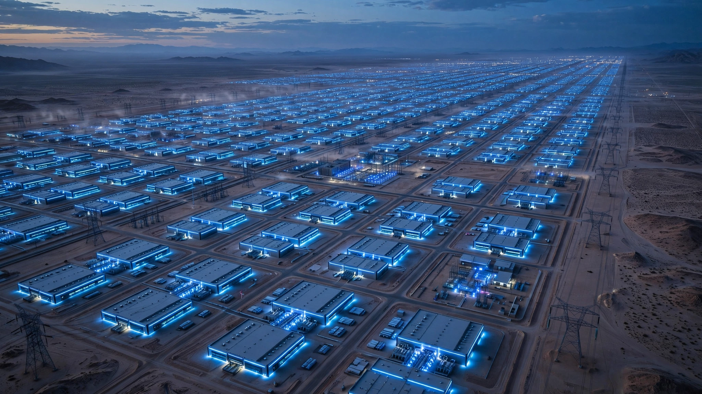

Masayoshi Son Wants 100 Trillion AI Agents. Each One Gets 30 Milliwatts.
SoftBank’s CEO told his annual conference that AI will need 3 terawatts of power by 2040 — nearly doubling global electricity demand — to support 100 trillion autonomous agents spending $5 trillion a year. Divide the power by the agents and each one gets less energy than a single LED. The math constrains what that future can actually look like.

Thirty milliwatts. That is how much power each of Masayoshi Son’s 100 trillion AI agents would receive if you divided his own electricity forecast evenly among them. It is less than the draw of a single indicator LED on the router blinking in your closet, roughly one-seventh the idle power of a Bluetooth chip, and about 23,000 times less than what a single NVIDIA H100 GPU consumes at peak. Son, SoftBank’s founder and chief executive, told his annual corporate conference in Tokyo today that artificial intelligence will require $5 trillion in annual investment by 2040, powered by 3 terawatts of dedicated generation capacity, supporting a civilization of 100 trillion autonomous agents that “make their own decisions, take action and communicate with other agents.”
Those three numbers (the dollars, the watts, and the agents) are not independent claims. They form a system of equations, and when you solve them against each other they reveal something Son did not say out loud: either most of those agents are asleep nearly all of the time, or they are far less computationally powerful than the AI we use today.
What 3 Terawatts Actually Means
Global installed electricity generation capacity at the end of 2025 reached approximately 10,400 gigawatts, of which 5,149 GW is renewable. Average global consumption runs about 3,500 GW, so Son’s 3 terawatts for AI alone would add 86 percent of current average demand on top of everything the world already uses for heating, cooling, manufacturing, and the roughly 10 billion people’s worth of existing load that grid operators already struggle to serve during summer peaks. Three terawatts is more generating capacity than the United States, the European Union, and Japan possess combined — equivalent to roughly 2,700 nuclear reactors, while the world currently operates about 440, per the IAEA’s PRIS database.
Building it requires approximately 207 gigawatts of new AI-dedicated generation capacity every year for 14 straight years. The entire world added about 800 GW of all new capacity in 2025, the highest year on record. AI alone would consume more than a quarter of current global annual additions.
The Per-Agent Power Budget
Now the division nobody ran. Three terawatts equals 3 × 1012 watts. One hundred trillion agents equals 1014. Divide and each agent receives 0.03 watts: 30 milliwatts. That is not enough to do anything useful. A Raspberry Pi Zero at idle draws 80 milliwatts. A smartphone’s processor in standby burns 200 to 500 milliwatts, seven to seventeen times more, and a smartphone in standby is doing nothing useful.
Concurrency resolves the paradox, because not all 100 trillion can run at once. What fraction can be active simultaneously, and what does that fraction’s per-agent power allocation imply about the kind of intelligence these agents are actually running?
| Concurrency | Active Agents | Power per Active Agent | Physical Equivalent |
|---|---|---|---|
| 10% | 10 trillion | 0.3 W | Smartwatch |
| 1% | 1 trillion | 3 W | Raspberry Pi |
| 0.1% | 100 billion | 30 W | Laptop CPU |
| 0.01% | 10 billion | 300 W | Single GPU server |
At 1 percent concurrency, one trillion agents are active at any moment while 99 trillion sit idle, and each active agent receives 3 watts. Enough today for an embedded microcontroller, not a frontier model. But by 2040, if inference efficiency continues improving at roughly 25 percent per year (NVIDIA’s throughput per watt has improved 40-fold since 2016, and custom inference ASICs from Google, Meta, Amazon, and dozens of startups are compounding on that trajectory), 3 watts buys what 1,000 watts buys today. A plausible single-GPU inference workload running on the power budget of a nightlight.
At 0.01 percent concurrency, 10 billion agents operate simultaneously (about one per human on Earth) and each gets 300 watts, a full server. Your personal AI, always on, burning as much electricity as a gaming PC, while the other 99.99 percent of the fleet sits dormant, consuming nothing, waiting for a signal that may not arrive within the hour or the day. Whether 100 trillion dormant software entities should be called “agents” or “database rows that occasionally wake up” is not a trivial semantic question: the business model, the pricing, and the infrastructure planning all change depending on which word you use.
The $5 Trillion and the Fusion Bet
Global IT spending across all categories reached approximately $5.3 trillion in 2025, according to Gartner’s annual forecast. Son is projecting that AI infrastructure alone will match the world’s entire current technology budget within 14 years. He justifies this by predicting AI will generate 20 percent of global GDP by 2040, roughly $33 trillion in revenue at 3 percent annual growth, making a $5 trillion spend a 15 percent cost ratio, within range for capital-intensive infrastructure where cost-of-goods ratios run 30 to 50 percent. Entirely dependent on the 20 percent assumption, which Son offered without supporting evidence.
He named nuclear fusion as the power source, with gas bridging the gap until fusion arrives. No commercial fusion reactor has ever produced sustained net energy, which makes that plan aspirational in the strongest sense of the word. ITER will not achieve full deuterium-tritium operation until approximately 2035, and fusion, starting from zero operational plants, would need to deploy faster annually than solar, humanity’s fastest-scaling energy source, has managed in its twentieth year of mass deployment.
What This Analysis Does Not Prove
Son’s speech was aspirational, not a business plan, and the per-agent power budget calculation assumes static technology, which is demonstrably wrong. If chip efficiency compounds at 25 percent per year through 2040, 30 milliwatts in 2040 buys what 30 watts buys today. Real but not necessarily disqualifying as a constraint. Son predicted the smartphone would be transformational in 2005, two years before the iPhone shipped. He also backed WeWork at $47 billion before it went bankrupt, and the Vision Fund lost $32 billion between 2019 and 2023. The question is not whether Son believes his forecast; SoftBank’s cumulative OpenAI position exceeding $60 billion proves he does. The question is whether 3 TW can be built in 14 years when transformer manufacturers cannot fill existing backlog, grid interconnection queues run three to four years, and 35 to 40 percent of announced data center capacity is already at risk of delay or cancellation.
What You Can Do With This
If you are an energy investor, Son’s speech is a ceiling to model against, not a forecast to trade on. Stress-test at 1 TW of AI generation by 2035 against the 200-500 GW base cases from Goldman Sachs, IEA, and Bernstein. If your thesis breaks at 1 TW, it will not survive the next decade of data center demand regardless of whether Son is right about the other two terawatts. Watch transformer and switchgear order backlogs as the leading physical indicator of which forecasts are tracking reality.
If you work in AI infrastructure, the per-agent power budget is the design constraint nobody is publishing. When your product team pitches “a trillion agents,” ask what concurrency model they assume and what per-agent wattage falls out. If the answer implies a dedicated GPU per agent, the fleet caps at billions. If it implies ambient intelligence at milliwatt levels, the business is sensors and scheduling, not frontier reasoning.
If you are a policymaker, the first-order question is not whether 3 TW is plausible. It is whether even 300 GW of incremental AI demand, a tenth of Son’s projection, can be permitted, interconnected, and energized faster than current grid queues allow. FERC interconnection reform (Order 2023) is the single highest-leverage regulatory action for clearing that bottleneck.